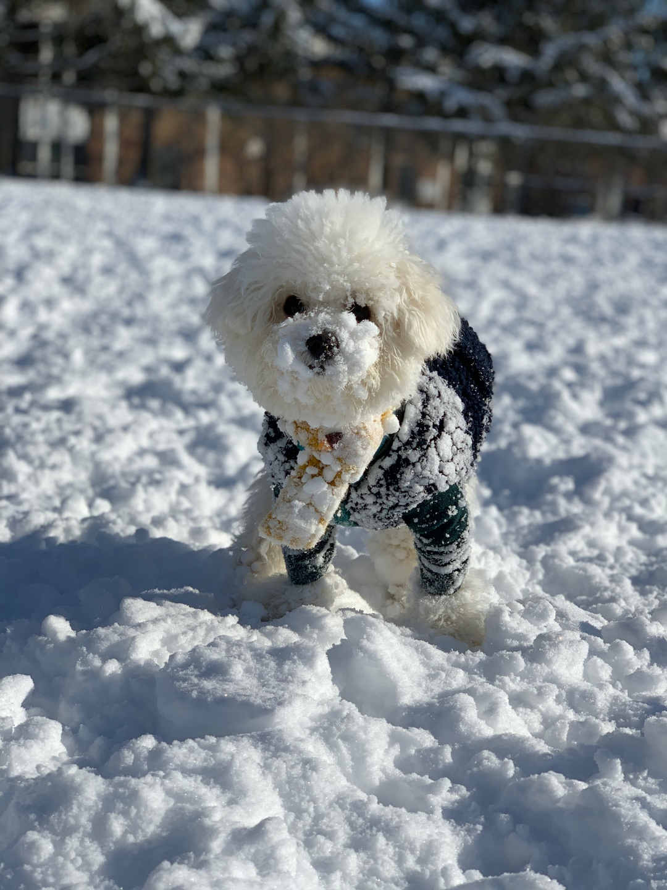

About Suhyun Kim
I have lived in Canada about two years. My birthday is April 29th When I decided to learn English, I needed to choose the country where I wanted to learn English. I was fascinated to go to Canada because I wanted to see aurora. However, I have not seen yet, so I am going to see the aurora next Winter if COVID-19 would disappear. One of my hobby is exercising.
I like doing Pilates and going gym. I used to exercise three times a week, but I have not been the gym about 8months due to COVID-19. Therefore, I cannot wait to do activities as before.I have recently a new hobby is baking. I sometimes bake muffins, cookies and Croissants.
One greatest weakness lies in giving up. The most certain way to succeed is always to try just one more time. Thomas Edison